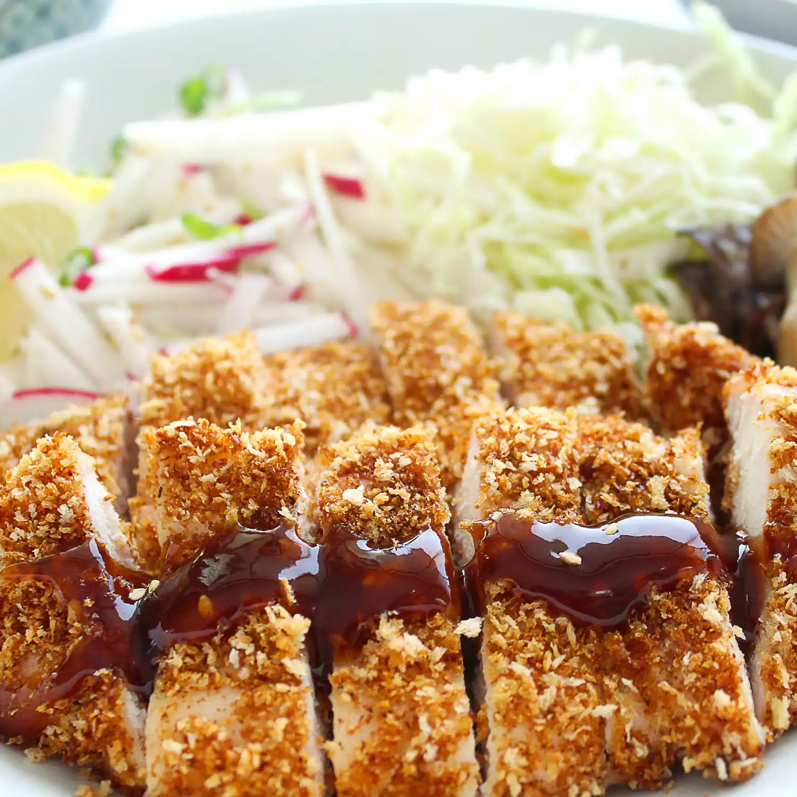

Chicken Katsu

Description
Chicken katsu is Japanese-style fried chicken. It can also be used to make tonkatsu by using pork cutlets instead of chicken. Serve with white rice and tonkatsu sauce.
Ingredients
- four skinless, boneless chicken breast halves
- salt and pepper
- all-purpose flour
- egg
- panko bread crumbs
- oil, vegetable or canola
Steps
- season the chicken
- dredge in flour
- coast the breast in egg
- press into panko
- fry the chicken until golden brown